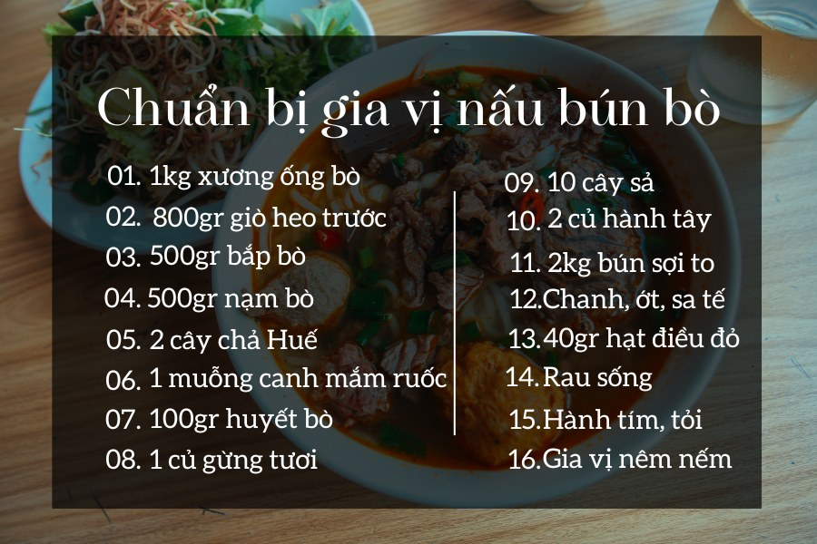
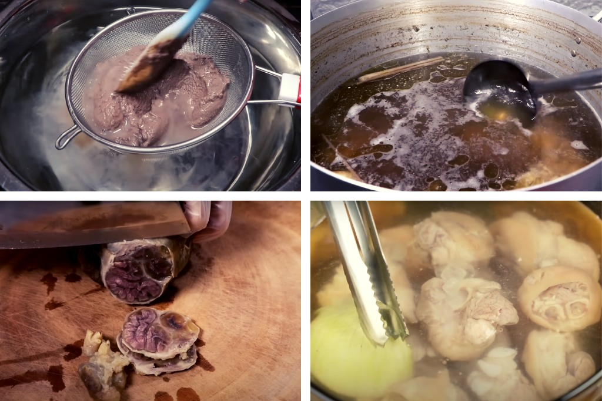
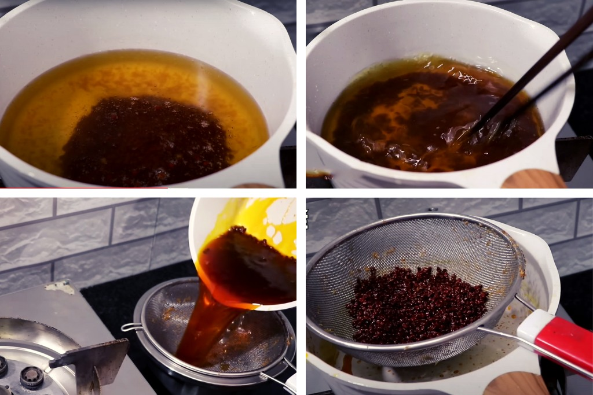
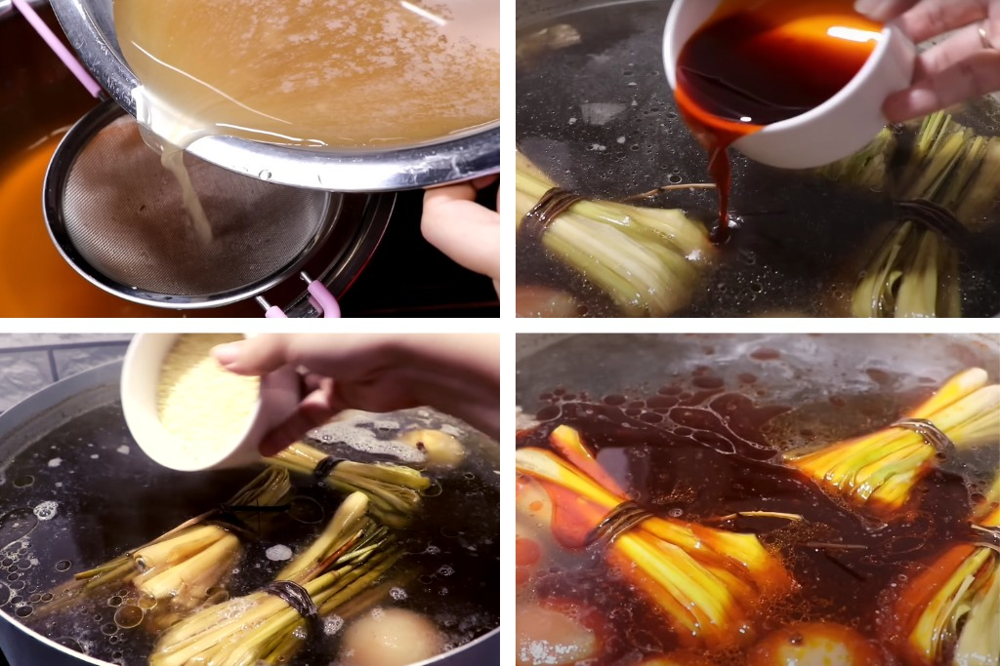
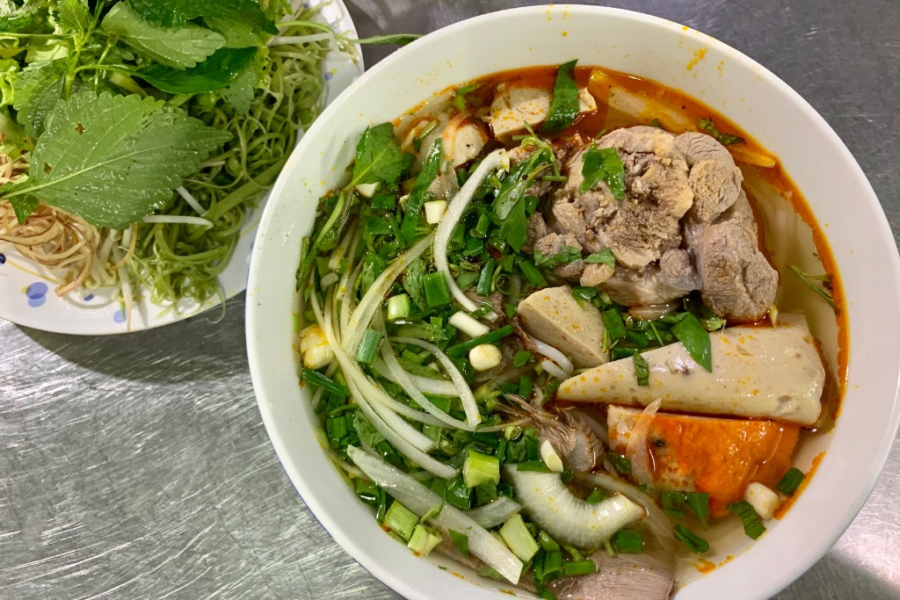

Nấu bún bò Huế
Nguyên liệu
- 1kg xương ống bò
- 800gr giò heo trước
- 500gr bắp bò
- 500gr nạm bò
- 2 cây chả quế
- 1 muỗng canh mắm ruốc
- 100gr huyết bò
- 1 củ gừng tươi
- 10 cây sả
- 2 củ hành tây
- 2kg bún sợi to
- Chanh, ớt, sa tế
- 40gr hạt điều đỏ
- Rau sống ăn kèm tùy sở thích
- Hành tím, tỏi
- Gia vị: hạt nêm, dầu ăn, tiêu, đường, muối, bột ngọt

Cách chế biến
Bước 1: Sơ chế các nguyên liệu
- Gừng, sả rửa sạch, gọt vỏ, đập dập.
- Băm nhỏ hành tím, tỏi và một ít sả.
-
Rau sống rửa sạch với nước muối. Hành tây gọt bỏ vỏ, rửa sạch bằng nước,
thái lát mỏng. Bạn có thể ngâm hành vào nước đá để loại bớt mùi hăng.
-
Giò heo rửa sạch, cạo lông, loại bỏ phần móng ở ngoài. Sau đó chặt khúc
vừa ăn.
- Huyết bò cắt miếng vừa ăn.
-
Xương, bắp và nạm bò đem rửa sạch. Cuộn nạm bò lại rồi buộc chặt, cả bắp
bò cũng vậy.
Bước 2: Hầm thịt và xương
-
Cho nước và mắm ruốc vào nồi, khuấy đều rồi đun sôi. Sau khi hỗn hợp đã
sôi thì vớt bọt bỏ, tắt bếp, để nguội rồi lóng lấy phần nước cốt.
-
Cho nạm bò, bắp bò, xương, một ít sả đã đập dập, 1 muỗng cà phê muối vào
nồi, đổ đầy nước vào sao cho vừa ngập đến mặt thịt. Sau khi nước sôi thì
hạ lửa nhỏ, vớt bọt bỏ đi, đun thêm khoảng nửa tiếng nữa thì tắt bếp. Để
hỗn hợp nguội bớt rồi mở nắp, vớt bắp bò và nạm bò ra cho vào nước lạnh.
- Tiếp đến, cắt bắp bò và nạm bò thành những miếng vừa ăn.
-
Tiếp tục cho giò heo, 1 muỗng muối ăn, gừng sả đập dập, hành và nước cốt
mắm ruốc đã lóng cùng nước vào một nồi khác hầm sôi. Sau khi đã sôi bạn
hãy hạ nhỏ lửa lại để thịt heo được mềm hơn rồi tắt bếp, vớt thịt ra và
lọc bỏ xương.

Bước 3: Tạo màu bằng hạt điều
-
Cho hạt điều và dầu vào chảo, đảo đều cho đến khi chuyển sang màu đỏ thì
vớt hạt điều ra. Tiếp đến, cho hành và tỏi băm vào xào thơm rồi tắt bếp.

Bước 4: Nấu nước lèo
-
Đổ hai phần nước cốt đã chuẩn bị bên trên vào chung một nồi lớn, thêm
một ít nước lọc vào rồi khuấy đều. Sau khi nước lèo sôi thì cho màu điều
đã làm vào.
-
Tiếp tục đun sôi hỗn hợp. Nêm nếm đường, muối, hạt nêm, bột ngọt, một ít
nước mắm, một ít sa tế vào nồi theo khẩu vị của bản thân.

Bước 5: Thưởng thức
-
Chần sơ bún qua nước sôi rồi cho vào tô. Tiếp đến cho giò heo, nạm bò,
bắp bò, hành tây và hành vào. Sau đó, đổ nước lèo vào tô, thêm một đĩa
rau sống cùng chanh, ớt bên cạnh là bạn đã hoàn thành xong một tô bún bò
thơm ngon tại nhà rồi.
